[,1] [,2] [,3]
[1,] 1 5 9
[2,] 2 6 10
[3,] 3 7 11
[4,] 4 8 12Краткое введение в мир линейной алгебры (Часть 2)
Вадим Хайтов, Марина Варфоломеева, Анастасия Лянгузова, Валентина Домашкина
Вы сможете
- Объяснить что такое матрицы и какие бывают их основные разновидности
- Выполнить базовые операции с матрицами с использованием функций R
- Применить в среде R методы линейной алгебры для решения простейших задач
Level 1: Немного повторения: Зоопарк матричных объектов
Матричные объекты
- Есть много типов объектов, для которых такое выражение оказывается наиболее естественным (изображения, описания многомерных объектов и т.д.)
- В матрицах, как и в обычных числах, скрыта информация, которую можно извлекать и преобразовывать по определенным правилам
Структура матриц
\[\begin{pmatrix} a_{11} & a_{12} & \cdots & a_{1c} \\ a_{21} & a_{22} & \cdots & a_{2c} \\ \vdots & \vdots & \ddots & \vdots \\ a_{r1} & a_{r2} & \cdots & a_{rc} \end{pmatrix} \]
Размер (порядок) матрицы \(r \times c\)
Разновидности матриц
\[ \textbf {a} = \begin{pmatrix} 1 & 2 & 3 \end{pmatrix} \] Вектор-строка (Row matrix)
\[ \textbf {b} = \begin{pmatrix} 1 \\ 4 \\ 7 \\ 10 \end{pmatrix} \] Вектор-столбец (column matrix)
Разновидности матриц
\[ \textbf {C} = \begin{pmatrix} 1 & 2 & 3 \\ 4 & 5 & 6 \\ 7 & 8 & 9 \\ 10 & 11 & 12 \end{pmatrix} \]
\[ \textbf {D} = \begin{pmatrix} 1 & 2 & 3 \\ 4 & 5 & 6 \end{pmatrix} \]
Прямоугольные матрицы (rectangular matrices)
В таком виде обычно представляются исходные данные при многомерном анализе.
В такой матрице столбцы - признаки (p), а строки - объекты (n).
Лучше, когда n > p, то есть когда объектов больше, чем признаков.
Квадратные матрицы (square matrices)
Это наиболее “операбельные” матрицы
\[ \textbf {E} = \begin{pmatrix} 1 & 2 & 3 \\ 4 & 5 & 6 \\ 7 & 8 & 9 \end{pmatrix} \]
Диагональные матрицы (diagonal matrix)
\[ \textbf {F} = \begin{pmatrix} 1 & 0 & 0 & 0 \\ 0 & 5 & 0 & 0 \\ 0 & 0 & 9 & 0 \\ 0 & 0 & 0 & 1 \end{pmatrix} \]
Квадратные матрицы (square matrices)
Треугольные матрицы (triangular matrices)
\[ \textbf {H} = \begin{pmatrix} 1 & 2 & 3 & 4 \\ 0 & 5 & 6 & 7 \\ 0 & 0 & 9 & 10 \\ 0 & 0 & 0 & 1 \end{pmatrix} \]
или
\[ \textbf {H} = \begin{pmatrix} 1 & 0 & 0 & 0 \\ 3 & 5 & 0 & 0 \\ 4 & 7 & 9 & 0 \\ 5 & 8 & 10 & 11 \end{pmatrix} \]
Квадратные матрицы (square matrices)
Единичная матрица (identity matrix)
\[ \textbf {I} = \begin{pmatrix} 1 & 0 & 0 & 0 \\ 0 & 1 & 0 & 0 \\ 0 & 0 & 1 & 0 \\ 0 & 0 & 0 & 1 \end{pmatrix} \]
Единичная матрица (обозначение \(\textbf{I}\)) занимают особое место в матричной алгебре.
Она выполняет ту же роль, которую выполняет единица в обычной алгебре.
Матрицы ассоциации
Изначально результаты исследования имеют вид исходной матрицы (обычно прямоугольной)
\[ \textbf{Y} = [n_{objects} \times p_{descriptors}] \]
Информация из этой матрицы конденсируется в двух других матрицах
Q анализ
\[ \textbf{A}_{nn} = [n_{objects} \times n_{objects}] \]
R анализ
\[ \textbf{A}_{pp} = [p_{descriptors} \times p_{descriptors}] \]
Матрицы ассоциации
Это симметричные квадратные матрицы
\[ \textbf{A}_{pp} = \begin{pmatrix} a_{11} & a_{12} & \cdots & a_{1p} \\ a_{21} & a_{22} & \cdots & a_{2p} \\ \vdots & \vdots & \ddots & \vdots \\ a_{p1} & a_{p2} & \cdots & a_{pp} \end{pmatrix} \]
В этой матрице \(a_{ij} = a_{ji}\)
Большинство многомерных методов имеет дело именно с такими матрицами
Особенность квадратных матриц
Для квадратных матриц могут быть найдены (но не обязательно существуют) некоторые важные для линейной алгебры показатели: определитель, инверсия, собственные значения и собственные векторы
Задание
Создайте с помощью R следующие матрицы
[,1] [,2] [,3] [,4] [,5]
[1,] 1 0 0 0 0
[2,] 0 2 0 0 0
[3,] 0 0 3 0 0
[4,] 0 0 0 4 0
[5,] 0 0 0 0 5Level 2: Еще немного повторения: Простейшие операции с матричными объектами
Транспонирование матриц
[,1] [,2] [,3]
[1,] 1 5 9
[2,] 2 6 10
[3,] 3 7 11
[4,] 4 8 12Транспонированная матрица \(\textbf{B} = \textbf{A}'\) синонимичная запись \(\textbf{B} = \textbf{A}^{T}\)
[,1] [,2] [,3] [,4]
[1,] 1 2 3 4
[2,] 5 6 7 8
[3,] 9 10 11 12Сложение матриц
[,1] [,2] [,3]
[1,] 5 9 13
[2,] 6 10 14
[3,] 7 11 15
[4,] 8 12 16 [,1] [,2] [,3]
[1,] 2 10 18
[2,] 4 12 20
[3,] 6 14 22
[4,] 8 16 24Но! Нельзя складывать матрицы разных размеров
Простое умножение
Умножение на число
[,1] [,2] [,3]
[1,] 4 20 36
[2,] 8 24 40
[3,] 12 28 44
[4,] 16 32 48Простое умножение матрицы на вектор возможно только если число элементов в векторе равно числу строк в матрице
[,1] [,2] [,3]
[1,] 10 50 90
[2,] 22 66 110
[3,] 36 84 132
[4,] 52 104 156Все элементы первой строки матрицы умножаются на первый элемент вектора, все элементы второй строки на второй элемент вектора и т.д.
Level 3: Векторы и их геометрическая интерпретация
Вектор в языке R
Мы уже привыкли, что в языке R все основано на векторных операциях.
Вектор – это последовательность чисел: \((x_1, x_2, ..., x_n)\).
Примеры векторов
НО! Почему одно число тоже вектор?
Почему одно число - это тоже вектор?
У матричных объектов есть геометрическая интерпретация.
Пусть у нас есть одно единственное число, например, “10”.
Его можно представить, как точку на числовой оси.
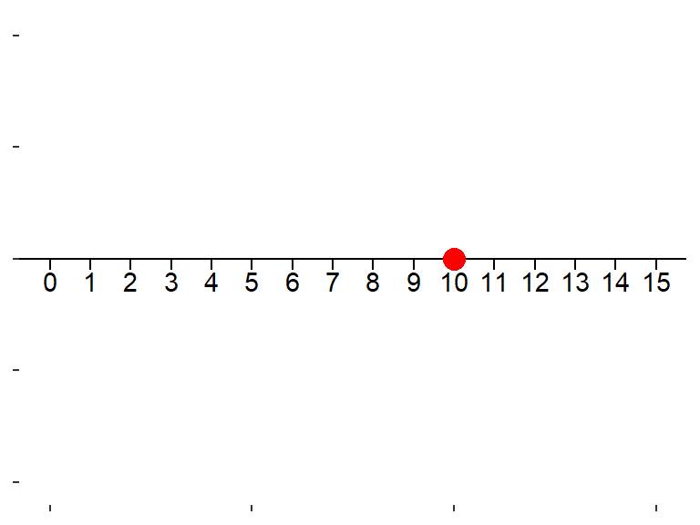
Но! Это же самое число можно представить в виде вектора, направленного отрезка, идущего от точки “0” к точке “10”
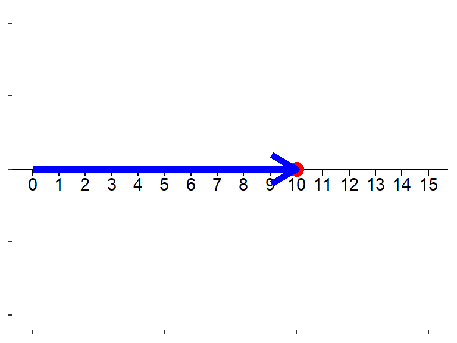
Интерпретация вектора
Геометрической интерпретацией вектора является направленный отрезок в n-мерном пространстве с началом в точке \((0, 0 .... 0)\).
Если в векторе всего два числа, то это направленный отрезок на плоскости.
Пример: vec = (1, 5)
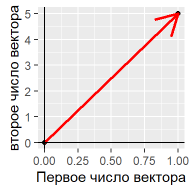
Длина вектора, геометрическая итерпретаця
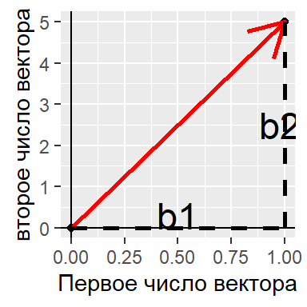
По теореме Пифагора
\[ R = \sqrt{b_1^2 + b_2^2} \]
Длина вектора в матричной алгебре
Пусть есть вектор: \(\textbf{b} = b_1, b_2, \dots, b_n\)
Длина вектора, или норма вектора
\[ ||\textbf{b}|| = \sqrt{b_1^2 + b_2^2 + \dots + b_n^2} \]
Длина вектора
[1] 7.42[1] 7.42Скалярное произведение векторов
Допустимо только для векторов одинаковой размерности
\[ \textbf{a} \cdot \textbf{b} = \begin{pmatrix} a_1 \\ a_3 \\ a_4 \\ a_5 \\ a_6 \\ a_7 \end{pmatrix} \times \begin{pmatrix} b_1 & b_3 & b_4 & b_5 & b_6 & b_7 \end{pmatrix} = a_1b_1 + a_2b_2 + ... + a_7b_7 = x \]
Это базовая операция для истинного матричного умножения.
Результат этой операции - число (скаляр)
Как это работает?
Бытовой пример
В доме есть следующие электроприборы.
| Электроприбор | Количество | Мощность (Вт) |
|---|---|---|
| Чайник | 2 шт | 1200 |
| Обогреватели | 3 шт. | 1300 |
| Осушитель | 1 шт. | 1100 |
| Стиральная машина | 1 шт. | 1500 |
| Фен | 2 шт. | 800 |
Вопрос: Какова будет суммарная мощность всех электроприборов, если их включить одновременно?
Решение
Геометрическая интерпретация скалярного произведения векторов
Скалярное произведение равно произведению длин векторов на \(cos\) угла между ними
\[ \textbf{a} \cdot \textbf{b} = ||\textbf{a}|| \times ||\textbf{b}|| \times \cos(\alpha) \]
Пусть у нас есть два вектора: \(\textbf{a} = 1, 5\) и \(\textbf{b} = 0.25, 4\)
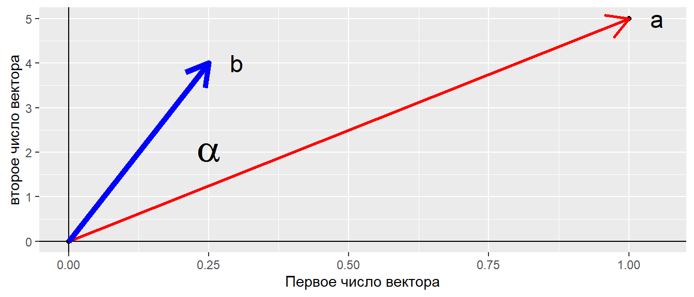
Ортогониальные векторы
Если угол между векторами равен 90 градусов, то такие векторы называются ортогональными.
У таких векторов скалярное произведение \(\textbf{a} \cdot \textbf{b} = 0\)
Задание
Выясните, являются ли ортогональными следующие векторы?
Решение
Угол между векторами
Пусть, векторы отражают признаки объектов.
Что характеризует угол между векторами?
Object1 Object2
Tr1 0.5 0.5
Tr2 0.0 3.0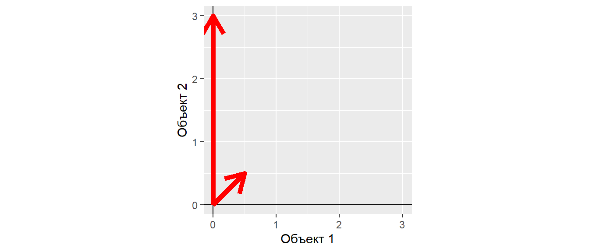
Угол между векторами
Длина векторов
Угол между векторами
Если
\[ \textbf{a} \cdot \textbf{b} = ||\textbf{a}|| \times ||\textbf{b}|| \times \cos(\alpha) \]
то
\[ \cos(\alpha) = \frac{\textbf{a} \cdot \textbf{b}} {||\textbf{a}|| \times ||\textbf{b}||} \]
cos_a <- (Dat[, 1] %*% Dat[, 2])/(norm(t(Dat[, 1]), type = "F") *
norm(t(Dat[, 2]), type = "F"))
cos_a [,1]
[1,] 0.707Угол между векторами - мера сонаправленности векторов…
Интерпретация угла между векторами

Интерпретация угла между векторами
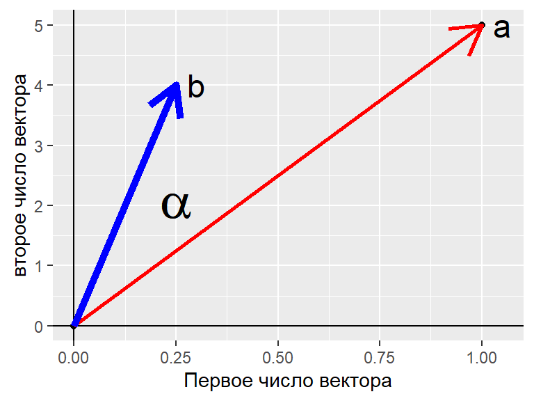
\[ \cos(\alpha) = \frac{\textbf{a} \cdot \textbf{b}}{||\textbf{a}|| \times ||\textbf{b}||} = \frac{a_x \cdot b_x+a_y \cdot b_y}{\sqrt {a_x^2 + a_y^2} \times \sqrt {b_x^2 + b_y^2}} \]
Интерпретация угла между векторами
Если вектор трехмерный
\[ \cos(\alpha) = \frac{\textbf{a} \cdot \textbf{b}}{||\textbf{a}|| \times ||\textbf{b}||} = \frac{a_x \cdot b_x + a_y \cdot b_y + a_z \cdot b_z } {\sqrt {a_x^2 + a_y^2 + a_z^2} \times \sqrt {b_x^2 + b_y^2 + b_z^2}} \]
Интерпретация угла между векторами
Если вектор n-мерный
\[ \cos(\alpha) = \frac{\textbf{a} \cdot \textbf{b}}{||\textbf{a}|| \times ||\textbf{b}||} = \frac{\Sigma{(a_i\cdot b_i)}} {\sqrt {\Sigma{a_i^2}} \times \sqrt {\Sigma{b_i^2}}} \] Ничего не напоминает?
Интерпретация угла между векторами
За точку отсчета взято начало координат, т.е. точка с координатами \(0, 0, \dots, 0\), тогда
\[ \cos(\alpha) = \frac{\textbf{a} \cdot \textbf{b}}{||\textbf{a}|| \times ||\textbf{b}||} = \frac{\Sigma{((a_i-0)\cdot (b_i - 0))}} {\sqrt {\Sigma{(a_i-0)^2}} \times \sqrt {\Sigma{(b_i-0)^2}}} \] Ничего не напоминает?
Интерпретация угла между векторами
\[ r_{x,y} = \frac{\sum(x_i-\bar{x})(y_i-\bar{y})} {\sqrt{\sum(x_i-\bar{x})^2}\sqrt{\sum(y_i-\bar{y})^2}} = \frac{cov_{x,y}} {\sigma_x \sigma_y} \]
Ключевая разница - это наличие вот этих элементов в формуле: \(x_i-\bar{x}\) и \(y_i-\bar{y}\)
Как называется действие, которое описывается такими формулами?
Интерпретация угла между векторами
\[ r_{x,y} = \frac{\sum(x_i-\bar{x})(y_i-\bar{y})} {\sqrt{\sum(x_i-\bar{x})^2}\sqrt{\sum(y_i-\bar{y})^2}} = \frac{cov_{x,y}} {\sigma_x \sigma_y} \]
Ключевая разница - это наличие вот этих элементов в формуле: \(x_i-\bar{x}\) и \(y_i-\bar{y}\)
Как называется действие, которое описывается такими формулами?
Это центрирование! Перевод начала координат в точку с координатами равными средним значениям векторов. Такая точка называется центроидом.
Вычисление косинуса угла между векторами
a b c
1 1 0.25 -3
2 5 4.00 0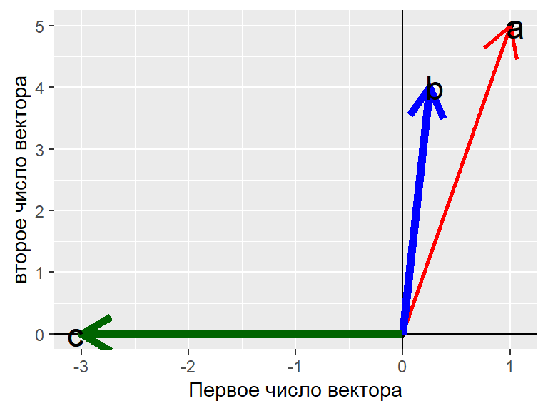
Коэффициент корреляции и косинус угла между векторами
Пусть есть два вектора в 100-мерном пространстве
Коэффициент корреляции
Косинус угла в 100-мерном пространстве
Нормализованные векторы
Для многомерных методов важны взаимоотношения векторов, а не их истинные длины.
Для приведения векторов к соизмеримости проводят их нормализацию.
\[ \textbf{c} = \frac{\textbf{b}} {||\textbf{b}||} \]
Задание
Найдите нормализованный вектор для следующего вектора и определите его длину
[1] 1 2 3 4 5Решение
Длина нормализованного вектора
- Длина нормализованного вектора равна 1. Это важное свойство для многомерных методов.
Нормализованные векторы
Исходные данные
Object1 Object2
Tr1 0.5 0.5
Tr2 0.0 3.0Нормализованные данные
Object1 Object2
Tr1 0.707 0.707
Tr2 0.000 1.000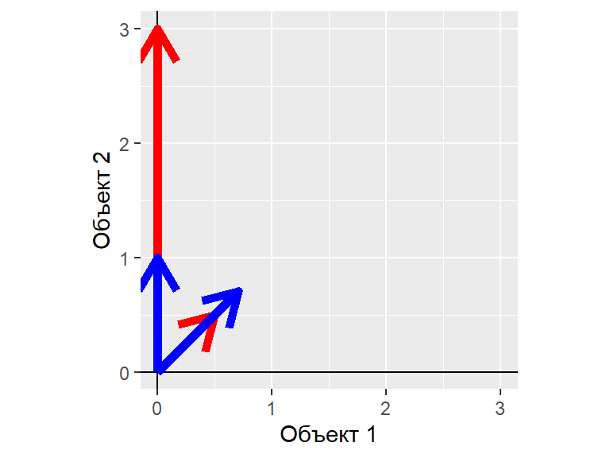
Характер взаимосвязи между нормализованными векторами такой же, как и у исходных векторов.
После нормализации, можно пренебречь разницами длин векторов.
Level 4: Еще немного повторения: Операции с матрицами
Матричное умножение матрицы на вектор
\[ \mathbf{A} \times \mathbf{a} \]
Умножать можно только в том случае, если число столбцов в матрице равно количеству чисел в векторе.
Пусть, есть матрица \(\mathbf{A}\)
[,1] [,2] [,3]
[1,] 1 5 9
[2,] 2 6 10
[3,] 3 7 11
[4,] 4 8 12- Первое число итогового вектора - скалярное произведение первой строки \(\mathbf{A}\) на вектор \(\mathbf{a}\)
- Второе число - скалярное произведение второй строки \(\mathbf{A}\) на вектор \(\mathbf{a}\)
и т.д.
Но! если поменять местами множители, то будет ошибка
Матричное умножение вектора на матрицу
\[ \mathbf{a} \times \mathbf{A} \]
Умножать можно только в том случае, если количество чисел в векторе равно количеству строк в матрице.
Но! если поменять местами множители, то будет ошибка
Error in A %*% c(10, 10, 10, 10): неподобные аргументыУмножение матриц
Умножать можно только в том случае, если число колонок в первой матрице равно числу строк второй матрицы: \(\mathbf{A} \times \mathbf{B}\)
Пусть, есть матрица \(\mathbf{A}\)
[,1] [,2] [,3]
[1,] 1 5 9
[2,] 2 6 10
[3,] 3 7 11
[4,] 4 8 12и матрица \(\mathbf{B}\)
[,1] [,2] [,3] [,4]
[1,] 1 2 3 4
[2,] 5 6 7 8
[3,] 9 10 11 12Схема умножения матриц
\[ \begin{pmatrix} A & B \\ C & D \\ \end{pmatrix} \times \begin{pmatrix} E & F \\ G & H\\ \end{pmatrix} = \begin{pmatrix} (A \cdot E + B \cdot G) & (A \cdot F + B \cdot H ) \\ (C \cdot E + D \cdot G) & (C \cdot F + D \cdot H) \\ \end{pmatrix} \]
Level 5.Матрицы, как инструмент преобразования
Геометрическая интерпретация матрицы
Вектор это направленный n-мерный отрезок.
Матрица - это система векторов
[,1] [,2]
[1,] 2 2
[2,] 3 2
[3,] 4 3
[4,] 5 3
[5,] 6 2
[6,] 7 2
[7,] 7 3
[8,] 7 4
[9,] 6 5
[10,] 5 6
[11,] 4 6
[12,] 3 5
[13,] 2 4
[14,] 2 3
[15,] 2 2Два сцепленных 15-мерных вектора
и/или
15 сцепленных двумерных векторов.
Геометрическая интерпретация матрицы
Интерпретация матрицы, вариант 1
V1 V2 V3 V4 V5 V6 V7 V8 V9 V10 V11 V12 V13 V14 V15
1 2 3 4 5 6 7 7 7 6 5 4 3 2 2 2
2 2 2 3 3 2 2 3 4 5 6 6 5 4 3 2Два вектора в 15-ти мерном пространстве
Изобразить на плоскости невозможно!
Геометрическая интерпретация матрицы
Интерпретация матрицы, вариант 2
[,1] [,2]
[1,] 2 2
[2,] 3 2
[3,] 4 3
[4,] 5 3
[5,] 6 2
[6,] 7 2
[7,] 7 3
[8,] 7 4
[9,] 6 5
[10,] 5 6
[11,] 4 6
[12,] 3 5
[13,] 2 4
[14,] 2 3
[15,] 2 215 векторов в двумерном пространстве
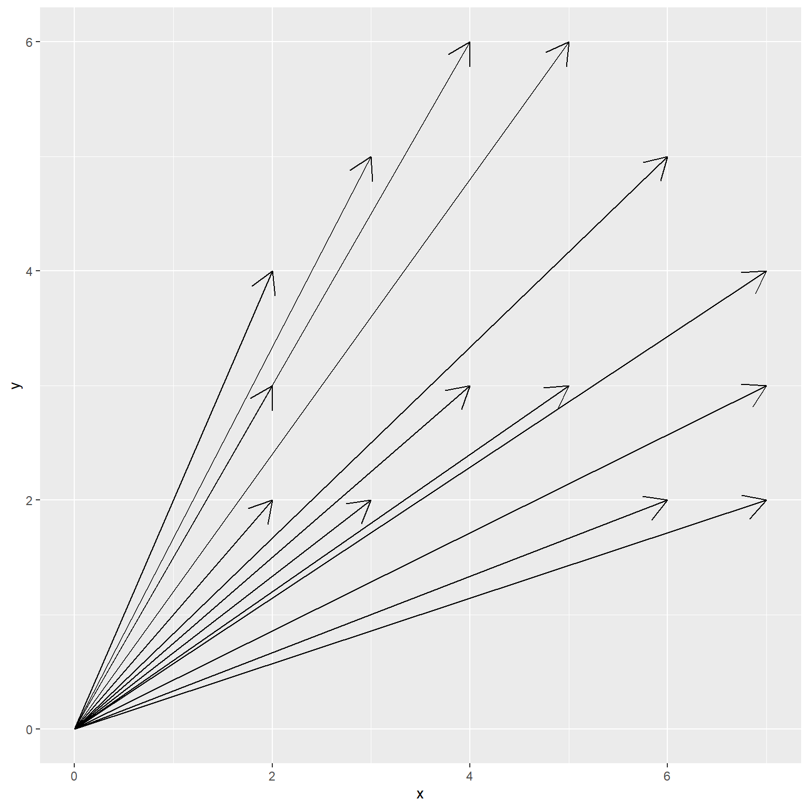
Геометрическая интерпретация матрицы
Интерпретация матрицы, вариант 2
Аналогичное изображение
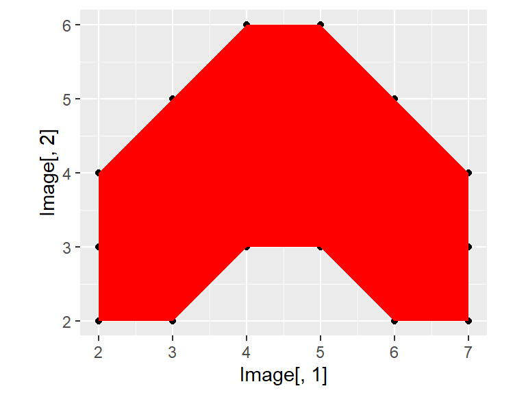
Матрицы позволяют преобразовывать системы векторов
Вращающая матрица \[ \textbf{Rot} = \begin{pmatrix} \cos\phi & -\sin \phi \\ \sin\phi & \cos\phi \end{pmatrix} \]
Поворот изображения на заданный угол
\[ \textbf{Y}_{rot} = \textbf{Rot} \times \textbf{Y} \]
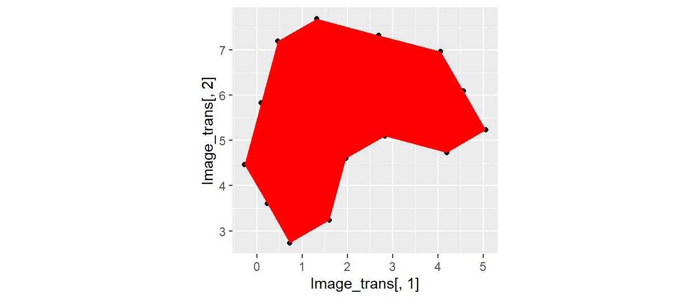
Матрицы позволяют преобразовывать системы векторов
Масштабирующая матрица \[ \textbf{Scale} = \begin{pmatrix} a & 0 \\ 0 & b \end{pmatrix} \]
\[ \textbf{Y}_{scaled} = \textbf{Scale} \times \textbf{Y} \]
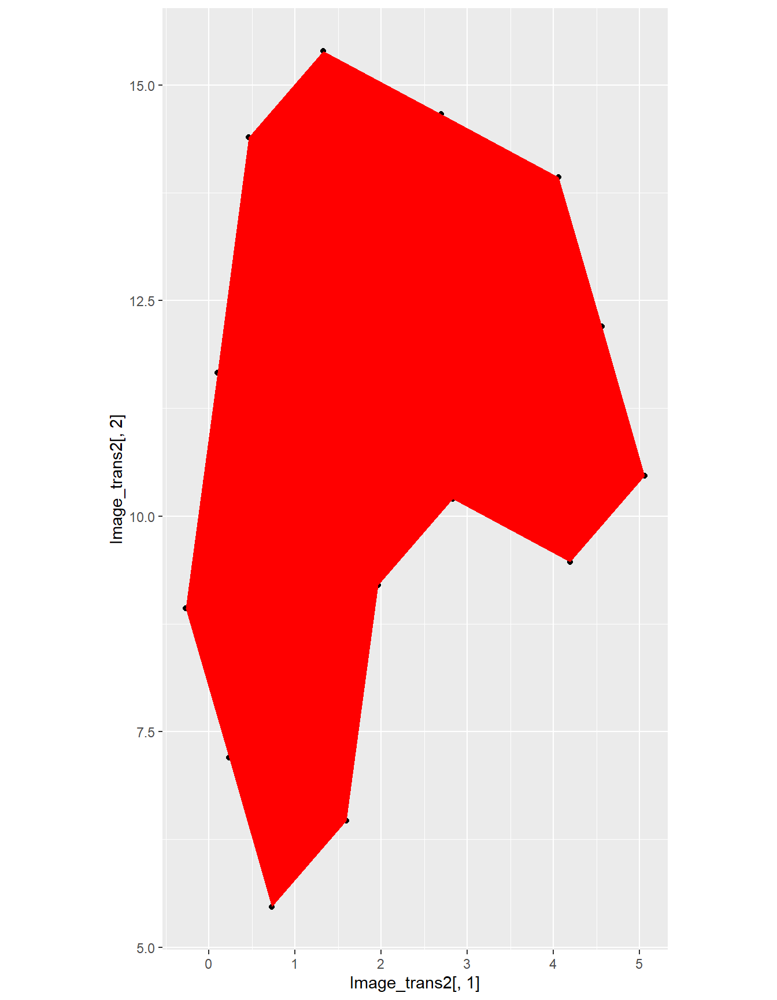
Применение вращения и масштабирования матричных обектов
- Многомерные анализы (о некоторых приемах речь впереди)
- Работа с изображениями
Level 6: Корреляционные и ковариационные матрицы
Ковариационная матрица
Во многих методах многомерной статистики применяется матрица ковариации.
Ковариация (согласованное отклонение от среднего):
\[ cov(X, Y) = \frac{1}{n - 1}\sum{(x_i - \bar{x})(y_i - \bar{y})} \]
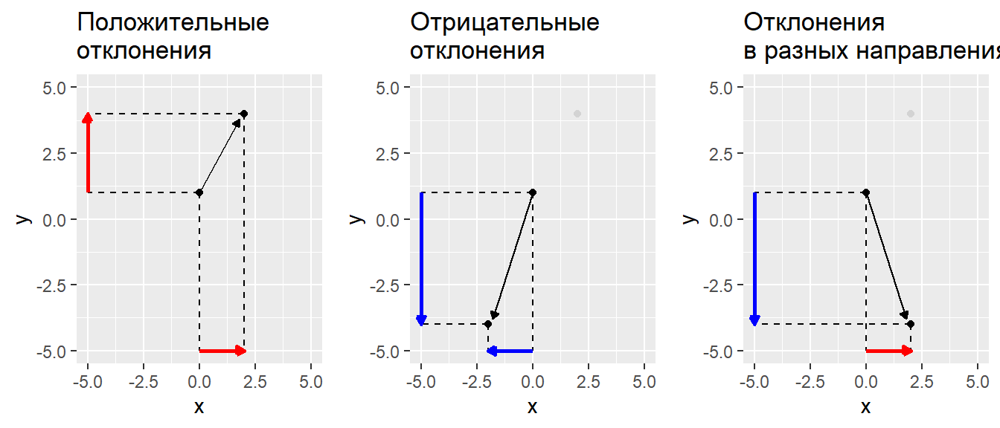
Ковариационная матрица
\[ \textbf{S} = \frac{1}{n - 1} \textbf{Y}_{centered}'\textbf{Y}_{centered} \]
где \(\textbf{Y}_{centered}\) - центрированная матрица исходных значений
Центрирование - перемещение начала координат в точку с координатами, равными средним значениям (центроид)
Корреляционая матрица
То же самое, что ковариационная матрица, но только на основе стандартизованных исходных значений
\[ \textbf{R} = \frac{1}{n - 1} \textbf{Y}_{stand}'\textbf{Y}_{stand} \]
Вычисление матрицы ковариации с помощью линейной алгебры
Исходная матрица
[,1] [,2] [,3] [,4]
[1,] 1 5 2 6
[2,] 2 2 1 8
[3,] 3 1 3 4
[4,] 4 2 5 0
[5,] 5 5 4 2Матрица центрированных значений
Вычисление матрицы ковариации с помощью линейной алгебры
Задание:
Вычислите ковариационную матрицу с помощью методов линейной алгебры и сравните ее с матрицей, полученной с помощью функции cov()
Вычисление матрицы ковариации с помощью линейной алгебры
Решение:
[,1] [,2] [,3] [,4]
[1,] 2.5 0.0 2.0 -4
[2,] 0.0 3.5 0.0 0
[3,] 2.0 0.0 2.5 -5
[4,] -4.0 0.0 -5.0 10 [,1] [,2] [,3] [,4]
[1,] 2.5 0.0 2.0 -4
[2,] 0.0 3.5 0.0 0
[3,] 2.0 0.0 2.5 -5
[4,] -4.0 0.0 -5.0 10Вычисление матрицы ковариации с помощью линейной алгебры
По главной диагонали ковариационной матрицы лежат квадраты стандартных отклонений каждого из векторов (колонок, признаков) исходной матрицы
Сравним
Вычисление матрицы корреляций с помощью линейной алгебры
Для вычисления матрицы корреляций необходимо стандартизировать значения в исходной матрице
[,1] [,2] [,3] [,4]
[1,] -1.265 1.069 -0.632 0.632
[2,] -0.632 -0.535 -1.265 1.265
[3,] 0.000 -1.069 0.000 0.000
[4,] 0.632 -0.535 1.265 -1.265
[5,] 1.265 1.069 0.632 -0.632
attr(,"scaled:center")
[1] 3 3 3 4
attr(,"scaled:scale")
[1] 1.58 1.87 1.58 3.16 [,1] [,2] [,3] [,4]
[1,] 1.0 0 0.8 -0.8
[2,] 0.0 1 0.0 0.0
[3,] 0.8 0 1.0 -1.0
[4,] -0.8 0 -1.0 1.0Зачем нужна ковариационная матрица?
В ковариационной матрице содержится вся информация о варьировании признаков и о их взаимосвязи
Свойства этой матрицы позволяют раскладывать изменчивость на отдельные составляющие (про это у нас будет специальная лекция).
Level 7: Еще немного повторения: Обращение (инверсия) матриц
Обращение (инверсия) матриц
В линейной алгебре нет процедуры деления. Вместо нее используют обращение матриц.
\[ \textbf{X}^{-1}\textbf{X} = \textbf{I} \]
Обратить можно только такую матрицу, у которой определитель не равен нулю \[|\textbf{X}| \ne 0\]
Матрицы, у которых определитель \(|\textbf{X}| = 0\) называются сингулярными матрицами они не могут быть инвертированы.
Важно!: Только квадратные матрицы имеют обратную матрицу.
Для квадратных матриц справедливо \(\textbf{X} \textbf{X}^{-1} = \textbf{X}^{-1} \textbf{X}\)
Важное свойство: Если квадратная матрица состоит из ортогональных векторов (ортогональная матрица), то \(\textbf{X}' = \textbf{X}^{-1}\)
Вычисление обратной матрицы в среде R
Создадим матрицу
[,1] [,2] [,3]
[1,] 1 2 3
[2,] 4 5 6
[3,] 7 8 10Ее определитель
Вычисление обратной матрицы в среде R
Обратная матрица
По определению \(\textbf{X}^{-1}\textbf{X} = \textbf{I}\)
Summary
- Линейная алгебра позволяет решать самые разные типы задач.
- Матричные методы лежат в основе очень многих типов анализа и служат для решения прикладных задач.
Что почитать
- Legendre P., Legendre L. (2012) Numerical ecology. Second english edition. Elsevier, Amsterdam. Глава 2. Matrix algebra: a summary.